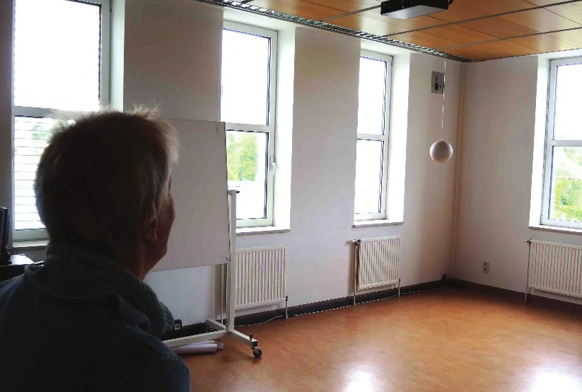
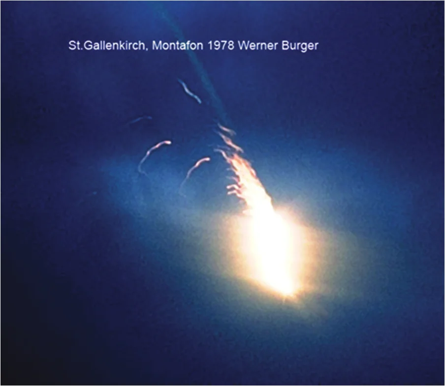
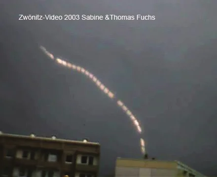

Ball lightning (BL) and UFOs as unsolved phenomena appear side-by-side in many news articles and popular books. The term BL has been used since Arago for unexplained metastable lightning forms that appear at random in time and space and last for seconds. For both classes of transient phenomena, most of the incoming material is anecdotal, thus serious investigation needs to consider and evaluate social as well as natural science data. However, BL theories still outnumber critical field investigations. The author—meteorologist and psychologist, involved in BL studies since —explains his examination of witness reports and related evidence, highlights BL case statistics, and delineates obstacles and chances for a potential scientific solution.
Guarda! Guarda!
(Look! Look!)—Calls from the Corsa dei Servi (today Corso Vittorio Emanuele II)
in central Milan (Italy), alarmed Mr. Butti, naval painter to the Empress of Austria. It
was six o'clock in the evening in , and a heavy thunderstorm was in
progress. Outside Butti's room, people followed a reddish-yellow ball of fire in the rain. It floated at
second-floor window level, rose higher, and exploded with a thud at a nearby church tower cross. The artist wrote a
report to physicist Arago. In , this report was quoted by Walther
Brand in his monograph Der Kugelblitz, the only one in German to date Brand, W.: Der Kugelblitz, Hamburg, Henri Grand, .
François Arago Arago, F.: Sur le tonnere. Annuaire pur l'an 1838 presente au roi par le bureau des Longitudes, Paris, Bachelier, pp. 221-618, first used the term ball lightning for an unexplained
group of metastable luminous phenomena of atmospheric electricity. Ball lightning (BL) makes its random appearance
in time and space, lasts for seconds, and ends with or without traces.
BL cases cause epistemological problems. After hundreds of years of BL case histories and 184 years of scientific interest, most of the material on record is still anecdotal. US lightning researchers Vladimir
Rakov and Martin Uman, in their handbook Lightning Rakov, V.A. & Uman, M.A.: Lightning. Physics and effects, Cambridge, Cambridge University Press, , p. 656,
write: The existence of BL seems beyond doubt after thousands of similar reports, but hard scientific evidence
in the form of photos, films or residue, a consensual theory or empirically convincing laboratory simulation is
largely missing.
This sounds unbelievable in our “science age” - we explore the most distant quasars with
space telescopes, but a phenomenon that appears within reach during thunderstorms should slip through the mesh of
natural science? As spontaneous, erratic phenomena, most BL events are witnessed by chance by non-scientists. When
alleged BL cases are reported by the media, it often
remains unclear whether such an object was actually seen or whether it was just being fantasized about. This means
that the BL case also has a sociopsychological level dealing with witness
reports, lay theories, and mental models.
The author encountered the BL debate while studying meteorology in Vienna (Austria) . He found BL reporting instructions in the official observer guide of the Austrian weather service, amused comments at the university, and emotional stories in the public. Getting interested, he wanted to take a closer look and examine the data. This led to 47 years of case collection, interviewing and field investigation with interdisciplinary contacts. First results were published in Keul, A.G.: Kugelblitze, Naturwissenschaften 68, pp. 134-136, , a preliminary BL case statistics (with Stummer) in Keul, A.G. & Stummer, O.: Comparative analysis of 405 Central European ball lightning cases, The Journal of Meteorology 27:274, pp. 385-393, .
BL belongs to the field of thunderstorms and lightning. Meteorologically speaking, thunderclouds are formed by the upward motion of moist air, whereby condensation and freezing of the water particles lead to charge separation and to electrical phenomena. A distinction is made between cloud-cloud flashes in the sky, cloud-ground flashes down to the ground, and ground-cloud flashes from towers or mountains upwards. Lightning is an ultrafast process made up of individual rapid discharges. In a cloud-to-earth lightning flash, a “stepped leader” starts in the cloud, growing rapidly downwards, where so-called “streamers” reach up towards it. One of them merges with the leader into the main discharge. Most cloud-ground flashes have multiple partial discharges (strokes), which explains the observed flickering of the lightning bolts. The discharge processes happen in the microsecond (10-6) to millisecond (10-3) range, too fast for the human eye to resolve. Lightning research is carried out in Austria by ALDIS, the lightning detection and information network of OVE (Association for Electrical Engineering) and Verbund (Austria's power company). Although lightning has been identified as an electric spark discharge since Benjamin Franklin in , it is far more complicated than the spark of an electrifying machine: There are different discharges, positive and negative or with polarity change, and of various energy content.
BL as a rare phenomenon has names in many languages Keul, A.G.: European survey on ball lightning, The Journal of Meteorology 30, pp. 99-103, : in Italy fulmine globulari, in France foudre (or éclair) en boule, in Spain rayo en bola, in Denmark kuglelyn, in Holland ball bliksem, in Germany Kugelblitz, in Sweden klotblixt, in Finland pallosalama, in Iceland urdarmáni, in England ball lightning, in Estonia keravälk, in the Czech Republic kulový blesk, in Hungary gömbvillám, in Russia sharovaya molniya, in Malaysia bola petir and in Japan hinotama. In Austria's folklore legends, there are definite BL references Keul, A.G. (ed.): Progress in ball lightning research: Proceedings of the interdisciplinary congress Vizotum, Salzburg, Austria, Sep 20-22, Salzburg, Vizotum, : Be it the rolling Klage of the Leitha Mountains, a ball of fate, Vizotum (as much as the devil himself) in the Bregenzer Woods, which rips careless people apart when rolling down the mountain, or the Carinthian Skopniak, a glowing ball that scorches the beards of wicked people. Although the early BL stories always give religious interpretations, currently no such references remain, so observers do not wonder what BL means for them or what it is that wants to tell them something. Unlike the field of UFOs, BL reports offer a subjectively impressive, but time-invariant repetition of similar phenomena typical for a natural origin.
Historical BL reports date back to and , i.e., over 450 years Doe, R.K.: Ball lightning: the illusive force of nature, in Pfeifer, K. & N. (eds.): Forces of nature and cultural responses, Dordrecht, Springer, pp. 7-26, . Scientific BL investigations started with Sur le tonnerre by French physicist François Arago Arago, F.: Sur le tonnere. Annuaire pur l'an 1838 presente au roi par le bureau des Longitudes, Paris, Bachelier, pp. 221-618, . The astrophysicist (and BL observer) Axel Wittmann, from the University of Göttingen, listed BL phenomenology in as follows Wittmann, A.: Gibt es Kugelblitze?, Umschau 76, pp. 516-521, :
Appearance in thunderstorms, often near cloud-ground lightning, round shape less than one meter, color mainly orange to red, opaque and self-luminous, continuous or irregular movement, sometimes motionless, frequent penetration into buildings, lifespan seldom over several seconds, with noise or noiseless, also in the final phase, mostly without traces, i.e., damage and injuries.
In addition to its appearance in buildings, numerous observations in and around aircraft at cruising altitude pose questions open to research
Doe, R.K. & Keul, A.G.: Ball lightning risk to aircraft, EGU2009 Geophysical Research Abstracts, vol. 11, EGU2009-0, NH1.7/AS4.4 Lightning and its Atmospheric Effects, Doe, R.K., Keul, A.G. & Bychkov, V.: An analysis of ball lightning-aircraft incidents, poster, AGU Fall Meeting 2009, San Francisco (California), . BL publications—already 1,600 listed in Barry's bibliography Barry, J.D.: Ball lightning and bead lightning, New York, Plenum, , 2,400 in
Stenhoff's collection Stenhoff, M.: Ball lightning, New York, Kluwer, —still have uncertain theoretical foundations, which is why the numerous case
studies, hypotheses and laboratory simulations from different research groups remain unconnected. Turner
Turner, D.J.: The fragmented science of ball lightning (with comment), Philosophical Transactions of the Royal Society of London, Series A 360, pp. 107-152, called this a “fragmented science” and demanded more integration and convergent operations.
However, at all congresses of the International Committee on Ball Lightning (ICBL) since , there have been long sessions with ever newer theories and models and only a few
field studies and case reports. Stanley Singer therefore criticized Singer, S.: Ball lightning—the scientific effort, Philosophical Transactions of the Royal Society of London, Series A 360, pp. 5-9, , p.
6: Only a small number of observations have been examined to determine the reliability of the eyewitnesses and
to evaluate the report.
In any case, the establishment of the ICBL was a step forward in , and the board members try to coordinate field findings at biennial conferences. A
technical communication of COST P18, signed by 30
leading European lightning experts Thottappillil, R.: The physics of lightning flash and its effects, COST P18 proposal, Technical Annex, Uppsala (Sweden), , cites BL as an open research topic.
In their lightning manual, Rakov and Uman divide BL theories into 16 categories Rakov, V.A. & Uman, M.A.: Lightning. Physics and effects, Cambridge, Cambridge University Press, , p. 664:
In addition to these 16 categories, there are also “illusion”/”hallucination” models that try to explain BL a) as a glare/dazzle lightning afterimage on the retina or b) as a neurological lightning artifact, an EM hallucination. However, this skeptical approach is unable to explain away the entire spectrum of cases, and above all the photo and video material Keul, A.G., Sauseng, P. & Diendorfer, G.: Ball lightning – an electromagnetic hallucination?, The International Journal of Meteorology 33, pp. 89-95, .
BL laboratory research, which aims to simulate the phenomenon, developed in a similarly idiosyncratic manner. Experiments considered silicon nano molecules at the points of lightning strike Abrahamson, J. & Dinniss, J.: Ball lightning caused by oxidation of nanoparticle networks from normal lightning strikes on soil, Nature 403, pp. 519-521, , plasma clouds triggered by a high-voltage pulse over water Egorov, A.I., Stepanov, S.I. & Shabanov, G.D.: Laboratory demonstration of ball lightning, Physics Uspekhi 47, 1, p. 99, Versteegh, A., Behringer, K., Fantz, U., Fussmann, G., Juettner, B. & Noack, S.: Long-living plasmoids from an atmospheric water discharge, Plasma Sources Science and Technology 17, pp. 1-8, , flammable substances in plasma Emelin, S.E., Semenov, V.S., Bychkov, V.L., Belisheva, N.K. & Korshyk, A.P.: Some objects formed in the interaction of electrical discharges with metals and polymers, Technical Physics 42, pp. 269-277, Dikhtyar, V. & Jerby, E.: Fireball ejection from a molten hot spot to air by localized microwaves, Physical Review Letters 96, 045002-1 – 045002-4, , arc discharges on silicon wafers Piva, G.S., Pavão, A.C., de Vasconcelos, E.A., Mendes Jr., O. & da Silva Jr., E.F.: Production of ball-lightning-like luminous balls by electrical discharge in silicon, Physical Review Letters 98, 048501-1 – 048501-4, etc. Bychkov et al. Bychkov, V.L., Nikitin, A.I. & Dijkhuis, G.C.: Ball lightning investigations, in Bychkov, V.L., Golubkov, G.V. & Nikitin, A.I. (eds.): The atmosphere and ionosphere. Physics of earth and space environments, Dordrecht, Springer, pp. 201-373, give a complete historical overview of theories and experiments.
Not laboratory simulation, but an innovative field experiment was carried out by the Uman research group Hill, J.D., Uman, M.A., Stapleton, M., Jordan, D.M., Chebaro, A.M. & Biagi, C.J.: Attempts to create ball lightning with triggered lightning, Journal of Atmospheric and Solar-Terrestrial Physics 72, pp. 913-925, . At the Camp Blanding military base in Florida, lightning has long been triggered by launching rockets with a metal wire during thunderstorms. In the same way, lightning bolts were triggered in and passed over about 100 different substances on the ground, including salt water, silicon wafers, stainless steel, and conifer branches. The resulting luminous phenomena were photographed and analyzed. There was a flame over salt water for half a second, luminous silicon fragments fell down for a second, a flashover at the steel surface formed a ball of light 33 cm in diameter and the discharge in the conifer branches was visible for half a second. Uman and colleagues did not call this BL, but pointed out the effects of various materials when exposed to lightning. Stephan and Massey Stephan, K.D. & Massey, N.: Burning molten metallic spheres: One class of ball lightning?, Journal of Atmospheric and Solar-Terrestrial Physics 70, pp. 1589-1596, added that some BL events could be explained by molten spheres when lightning strikes evaporate metal objects.
Another problem is the following: The term BL stands for spherical objects, but does not automatically justify
one homogeneous, self-contained phenomenon. The sun and the moon appear round in the sky and at almost
the same angular size without being physically the same. Every blinding short-circuit arc after a lightning strike
appears to the observer as a sphere, but is by no means spherical, but only an over-exposure image due to
irradiation. Rakov and Uman Rakov, V.A. & Uman, M.A.: Lightning. Physics and effects, Cambridge, Cambridge University Press, , p. 656 are therefore right with their cautious remark that there can
be more than one type of BL and therefore more than one mechanism by which BL arises.
The majority of ball lightning reports are only verbal. Social science techniques can be used to interpret them and to assess the testimony of witnesses Keul, A.G. (ed.): Progress in ball lightning research: Proceedings of the interdisciplinary congress Vizotum, Salzburg, Austria, Sep 20-22, Salzburg, Vizotum, . Forensic psychologists have already done numerous field studies with eyewitnesses, but not in the contexts, situations, and latencies typical for BL events. Nevertheless, there are interesting results from this research field: Special details of a sequence of actions are better remembered Marshall, J., Marquis, K.H. & Oskamp, S.: Effects of kind of question and atmosphere of interrogation on accuracy and completeness of testimony, Harvard Law Review 84, pp. 1620-1643, . Central details of a scene are clearly remembered, even if they caused fear Kebeck, G. & Lohaus, A.: Effect of emotional arousal on free recall of complex material, Perceptual and Motor Skills 63, pp. 461-462, . People tend to overestimate the duration of fearful and stressful events Sarason, I.G. & Stoops, R.: Test anxiety and the passage of time, Journal of Consulting and Clinical Psychology 46, pp. 102-108, . Observed details can be distorted by suggestive questioning, and also by personal and cultural stereotypes Carmichael, L.C., Hogan, H.P. & Walter, A.A.: An experimental study of the effect of language on the reproduction of visually perceived form, Journal of Experimental Psychology 15, pp. 73-86, . Emotionally disturbing sudden events are often stored and recalled together with irrelevant details of the event situation (“flashbulb memory”) Brown, R. & Kulik, J.: Flashbulb memories, Cognition 5, pp. 73-79, . Incorrectly remembered details are furthermore remembered this way (“freezing effect”) Kay, H.: Learning and retaining verbal material, British Journal of Psychology 46, pp. 81-100, .
Cognitive psychology speaks of “mental models” as internal symbols or representations of external reality, essential for perception and interpretation Craik, K.J.W.: The nature of explanation, Cambridge, Cambridge University Press, . For Gentner and Stevens Gentner, D. & Stevens, A.L.: Mental models, Hillsdale (New Jersey), Lawrence Erlbaum, , a mental model is based on non-qualifiable, obscure, and incomplete information Gentner, D. & Stevens, A.L.: Mental models, Hillsdale (New Jersey), Lawrence Erlbaum, —this is what happens when a round hole in a wall becomes a compelling “proof” of BL after a thunderstorm. Recently, mental models have been used in ecosystem research as an interdisciplinary synthesis of theory and methods (Ross et al. ) Jones, N.A., Ross, H., Lynam, T., Perez, P. & Leitch, A.: Mental models: an interdisciplinary synthesis of theory and methods, Ecology and Society 16(1), p. 46, [Editor's note] The book cites “Ross et al. 2001”, but its reference list only has this article by Jones, Ross et al.. Another term is used in social and clinical research: “lay theories” are informal, common-sense explanations by laypeople of certain phenomena, usually completely detached from scientific explanations Furnham, A.: Lay theories, Oxford, Pergamon Press, . The BL case investigator must be aware of the phenomenon of false BL reports. They are produced by a common mental model or lay theory that goes like this: “Extraordinary events in a thunderstorm, such as strange or unexpectedly large damage and other unexplained things, are caused by the extremely dangerous BL.” So, if an “evil” cloud-ground lightning bolt damages a church or destroys an entire warehouse, BL comes under suspicion—even in the eyes of rural police or insurance agents. Upset victims and media people are happy to accept the BL label because it reduces uncertainty. For the author, despite all emotionally charged evidence, this is by no means BL, but a false alarm. In short, BL investigations cannot be an inductivistic, theory-free game, but implicitly or explicitly follow a research paradigm Kuhn, T.S.: The structure of scientific revolutions, Chicago, University of Chicago Press, : It determines what is observed and how, which questions may be asked, how results should be interpreted, how experiments have to be carried out.
Whereas the interest of social scientists in UFOs (or rather, in
the UFO observer) has already been considerable, psychological studies about lightning and BL are still rare.
Together with students, the author accomplished a 51-item survey on lightning knowledge, risk awareness, folk beliefs,
life-saving cognitions, and behavior (N=133, age 20-84, Upper Austria and Salzburg) Keul, A.G., Freller, M.M., Himmelbauer, R., Holzer, B. & Isak, B.: Lightning knowledge and folk beliefs in Austria, Journal of Lightning Research 1, pp. 22-29, . With
another student group Keul, A.G., Lengauer, S., Ludwig, S. & Kovacz, A.: Experimental ball lightning size estimation, 1st International Symposium on Lightning and Storm-Related Phenomena, Aurillac (France), , a simple BL perception experiment was arranged in in an empty seminar room of Salzburg University (see Fig. 1): In daylight, a non-luminous white
Styrofoam globe (2 diameters: 15 or 20 cm) was hung from a nylon thread at eye level 3 meters from the subjects
(97% students, 30 male, 30 female, 16-62 years, mean 23, 50% were shown the 15-, 50% the 20-cm object). Subjects saw
this object when entering the room and, after 4 seconds, had to turn around and reconstruct the object size with
both hands. After that, they were asked about the object size in cm. The same task was repeated to indicate the size
of a soccer ball from memory (physically and verbally). The results: Shown with the hands, the 15-cm object gave a
mean size estimate of 15.3 cm, the 20 cm object of 21.7 cm. The verbal mean estimate was 17.5 cm for the 15-cm
globe and 19.9 cm for the 20-cm object. All estimate deviations were not statistically significant. However, the
soccer ball (22 cm for adults), recalled from memory, had 28.3-28.8 cm physically and 29.7-25.4 cm verbally, which
are statistically significant overestimations. We conclude that educated observers under favorable conditions, low
stress and short recall time can produce fairly accurate size estimates. The results will probably be different for
low education, long recall times and unfavorable conditions, but the harsh judgement of some experts (usually
untrained in experimental psychology) that eyewitness estimations are good for nothing
should be treated
with caution. A replication of the Salzburg BL experiment with different borderline conditions (no bright daylight,
luminous object, various recall times/stress) and a general population sample would be a good idea.

According to a local newspaper, on , shortly after CEST (Central
European Summer Time), a thunderstorm in Strasburg near Uecker-Randow,
Mecklenburg-Western Pomerania, Germany, caused a major fire on the roof of a local prefabricated housing estate. A
journalist for NordKurier wrote Marten, R.: Kugelblitz entfacht Großbrand, NordKurier Strassburg, : ... a football-sized fireball sat down during
the thunderstorm on blocks 34 to 37 in Straßburger Siedlungsweg 1, about house entrance 35. The fireball then
raced southward over the roof and set all combustible material on fire.
The fire spread quickly over the
entire length of the roof structure, which burned out completely despite immediate alarms to all local fire
departments. A photovoltaic system had been installed over the full length of the roof in the previous
autumn—it was destroyed in the fire. On the evening in question, a low pressure system over the British Isles
created two cold fronts with widespread thunderstorms before CEST. Gerhard Diendorfer, head of
ALDIS (the Austrian lightning
surveillance), looked through his German records and found a series of four negative cloud-to-earth lightning strikes between 4,000 and 21,000
amperes scattered over 1 km in the fire area. It seems likely that a negative cloud-to-ground lightning stroke
caused a short circuit in the photovoltaic system, which then set fire to the entire length of the roof. The
short-circuit arcs then appeared to observers as a moving ball of fire.
On , BL was reported to ZAMG Zentralanstalt fuer Meteorologie Vienna. A day later, the author interviewed the reporting witness, Reinhard Wilhelm, 49 years, executive director of a technical company with a MSc in management Keul, A.G.: A brief history of ball lightning observations by scientists and trained professionals, History of Geo- and Space Sciences 12, pp. 43-56, . ALDIS lightning data were checked by Gerhard Diendorfer and Rainer Kaltenberger, and as the COVID pandemic prevented a field investigation, the witness sent a photo reconstruction plus measurements of azimuth, elevation, size, and object angle.
After heavy thunderstorms over Vienna on , Mr. Wilhelm and his wife went out into the garden of their home in Vienna's 22nd district (Neu Essling) between CEST. Thunderstorms were still in progress, but no rain fell. Looking eastwards, both saw something striking—Mr. Wilhelm first in the corner of his eye, his wife directly: Moving upwards, the light seemed to contract into a white sphere which illuminated the clouds, circled shortly, stopped, then quickly flew up at an angle into the cloud layer and disappeared. The duration was about 2 seconds, probably longer. The light was white, steady. The object had 0.1 degrees size (witness size test estimation), was in the east at 45 degrees elevation (i.e., 2 km direct distance) just below the cloud base, so it was about 3.5 m diameter. Mr. Wilhelm knew BL from the media and sent an email report to the ZAMG meteorologists.
was the hottest day so far of in eastern Austria, with 37.2°C at Vienna, followed by a cold front with heavy thunderstorms, hail and flooding. The city's heat island intensified the thunderstorms. At CEST, Grossenzersdorf station 4 km east reported 21°C, 80% relative humidity, wind 15 km/h (gusts 35), 2.5 mm rain, Vienna airport station a visibility of 22 km, cloud base at 1,500 m. Of three instability parameters derived from the 18 Z (20 CEST) Vienna radiosonde, only CAPE (convective available potential energy for instability, deep moist convection) was strong with >1000. In the CEST ALDIS record, Vienna lightning activity was still considerable with 108 detections, but not in Neu Essling with only 10 events within a 5 km radius. At GMT ( CEST), a strong positive cloud-ground stroke with +170.4 kA was detected 0.5 km west of the witnesses' location, at their back. A first study of 34 European BL events versus lightning location data showed a correlation with strong positive CG strokes Keul, A.G. & Diendorfer, G.: Assessment of ball lightning cases by correlated LLS Data, 34th International Conference on Lightning Protection, Rzeszow (Poland), , IEEE 978-1-5386-6635-7/18/$31.00.
Random reports almost always come from lay people. Lately, the main medium is email for reports from observers who find the author's internet information page. Starting a BL investigation Keul, A.G.: The ball lightning controversy: Empirical case studies, in Pfeifer, K. & N. (eds.): Forces of nature and cultural responses, Dordrecht, Springer, pp. 27-48, , the first report must be listened to/read critically and categorized into: a) Errors (misidentification, fraud, other phenomena), b) Inadequate information/second-hand reports (insufficient details, secondary reports—“my late grandfather once saw...”) or c) sufficient details for further examination. In the third case, direct contact with the main observers is mandatory, via telephone, internet, or in writing. In substantial recent cases, a cost-intensive field investigation should be carried out. Without research funding, for economic reasons the researchers' main energy should concentrate on promising cases—very qualified observers, photos, videos, material traces. The author uses a questionnaire for phone calls, email, or letter contacts and a field investigation scheme as a checklist.
In contrast to pure physical research, there is always an observer who is of psychological and medical interest.
For example, if an observer reports subsequent visual disturbances, one should not speculate, but ask about
ophthalmological symptoms. In a BL case, it was evidently photoelectric
keratitis. If there are—rarely enough—several observers, separate interviews are necessary in order to document
individual perceptions and details. Interviews are given voluntarily, so observers should be treated kindly and not
“interrogated.” The best situation for eyewitnesses who are supposed to remember details is to return to the
observation site, where appropriate environmental cues are present and can be taken into account. In this way, for
example, the observation framework can be clarified: Did the object appear in an open field or within a limited
field of vision, was the trajectory only the visible part of a longer one? The observation duration may be
reconstructed in the field: Now imagine, the whole thing is happening again and you tell me ‘now’ when it starts
and ‘stop’ when it is over.
The duration is measured with a stopwatch. It can be shorter or longer than first
estimated by the observer (compare Sarason & Stoops Sarason, I.G. & Stoops, R.: Test anxiety and the passage of time, Journal of Consulting and Clinical Psychology 46, pp. 102-108, ). The size estimate poses a similar
difficulty—apart from possible overexposure (irradiation) against a dark background, to ask for centimeters is
pointless, because people in everyday life (perhaps with the exception of some specialists) do not think in
centimeters, but use comparative objects as a size reference. “Soccer ball-size” (for adults) is therefore a more
common specification than “22 cm.” As with any field research, field sketches and photos with a scale are a matter
of course. The anonymity of the observer must be strictly observed (European DSGVO, English GDPR General Data Protection Regulation DSGVO; Daniel ) Daniel: EU data protection regulation: tips to ensure GDPR compliance, [Editor's note] The book's reference list dates
this Daniel article from , not 1918., especially in controversial
cases. Media contacts have to follow ethical standards, observe the copyright of photos/videos and not be
profit-oriented. In the author's field work, material traces were rare exceptions (e.g., Keul, A.G., Gugenbauer, A. & Diendorfer, G.: A ball lightning trace case at Perg, Upper Austria, The Journal of Meteorology 18, pp. 287-294, ). The
assistance of qualified experts should always be sought for competent trace examinations.
Photography has the potential to record transient phenomena and allows a laboratory
examination of the physical record Keul, A.G.: Possible ball lightning colour photograph from Sankt Gallenkirch, Vorarlberg, Austria, The Journal of Meteorology 17, pp. 73-82, Keul, A.G.: Ball lightning photographs—testing the limits, The Journal of Meteorology 21, pp. 82-88, . Spontaneous photographic material of BL is rare because it is practically
impossible to capture a five-second phenomenon after a moment of shock with a camera. Therefore, BL will more
often appear on long-term shots and automatic recordings. Vicente-Juan
Ballester-Olmos Van Utrecht, W. & Ballester Olmos, V.J.: Lightning-Like Phenomenon on 1893 Photograph, holds a catalogue of 140 BL pictures/films . Here is such a case: Werner Burger, eyewitness and photographer of the BL
color slide, contacted the author after a local press call-for-reports in . After inspecting a paper copy of the photo (see Fig. 2), the author went to
Vorarlberg for a field investigation. Thereafter, copies of the photo plus investigation report were distributed
to astronomical, meteorological, and technical experts asking for their opinions. Also, a computer image analysis
was performed. On a summer night (very likely the cold front passage of
), Mr. Burger noticed an approaching storm front in St. Gallenkirch. The village has 1,400
inhabitants and is located in the Montafon Valley of southern Vorarlberg at about 900 meters, surrounded by
mountain massifs of over 2,000 meters. The place of observation was
Aussergant near the Silvretta Pass road. Burger put his mirror reflex camera with tripod and wire trigger on the
balcony to photograph lightning. The camera
looked towards Mt. Grappeskogel (2,206 m) in the east. It was dark and before midnight. The observer had just
started a further time recording and pressed the remote release when he heard a noise, as of a Christmas
sparkler, or a wire brush pulled over an edge,
then ahead, a fireball fell down.
Burger, a bit
shocked, let go of the wire trigger before the object disappeared. A reconstruction on the spot timed two seconds
visual observation time and before that, one second of noise. The object seemed to be in free-fall. The lightning
and BL long-term photos were made with a Fujica AZ1, focal length 55 mm, on Agfa CT-18 diapositive film, 50
ASA. After development, the lightning slides were overexposed, but the BL appeared sharp and with details.
The observer was born in the Montafon Valley and in was working for a cable car company. At the time of inquiry, he had government
work and, together with his wife, ran a bed-and-breakfast. He had normal visual acuity and was an active athlete.
The color slide measures 23x35 mm. It was scanned for photo analysis (see Fig. 2). In the interdisciplinary
analysis Keul, A.G.: Ball lightning photographs—testing the limits, The Journal of Meteorology 21, pp. 82-88, , meteor astronomer Zdeněk Ceplecha, of Ondřejov, Czech Republic, emphasized the parabolic form of the
trajectory, but excluded a bright meteor
(it was in front of the clouds!). He estimated it as an object one meter across at a distance of 400 meters. He
pointed out that the two longest and brightest sparks followed different paths. Pyrotechnician Claus Feuerstein
did not recognize any typical fireworks rocket. The photographed “sparks” were not customary in pyrotechnics, but
looked military to him, such as burning gas or a liquid. Josef Scheutz, a second pyrotechnician, thought he
recognized a “Scorpio bomb” pyro effect, but the author could not photograph a BL-similar effect with one of his
fireworks at Linz, Austria. “Bombs” usually explode after
a vertical climb without a luminous track. Colonel Marterbauer, Austrian Army, Salzburg, said that firing
artillery ammunition is not allowed in the Montafon Valley, but only on special military exercise grounds. He
definitely excluded an artillery shell or grenade in the photo. Lightning protection engineer Alfred Gugenbauer,
Linz, Upper Austria, saw an upward lightning flash as possible explanation. His hypothesis, however, fits neither
the observation nor the photographic data. Upward lightning would neither be observed nor photographed as a
falling object. The head of ALDIS
(Austrian Lightning Location and Information System), lightning protection engineer Gerhard
Diendorfer, contradicted the upward lightning hypothesis. Photographed cloud-ground or cloud-cloud
lightning forms a continuous channel, not a fragment. Lightning researcher Doug G. Jordan, a US colleague of
Professor Uman in Florida, examined the photography during a visit to Austria. He noticed no standard
lightning,
wondered why the “sparks” had similar forms, and said the object might be something that falls
down burning after a lightning strike. Hannspeter Winter, Plasma Physics professor at the University of
Technology Vienna: Something fell from the sky and burned out… It is definitely not a highly ionized plasma…
When the film shows the correct color temperature, this is a rather cold phenomenon, a conventional combustion
process of 1,500 to 2,000 degrees Celsius maximum. On the other hand, plasma, like lightning, would be in the
blue spectral range.
Lightning protection expert Walter Hattinger, of Salzburg, saw neither conventional
lightning nor burning magnesium. Maybe a flammable liquid? Salzburg Fire Brigade training officer Greisberger
denied that: A burning liquid would not be compact, but would quickly dissolve... Burning gas does not burn so
bright… This is a solid body that is burning in the core and somehow dissolves.
Further discussions at the ICBL BL congresses in Los Angeles and in Salzburg did not arrive at new insights. In the Montafon Valley, the author made long-term photo exposures of alpine signal missiles fired by Werner Burger as a comparison. Their sparks were rather regular, not similar to the sparks on the BL photograph. Although the absence of any landscape details on the Montafon photograph represents a certain forensic weakness, its rich details are remarkable and should encourage further analyzes by interested experts.

BL movies or videos would be most valuable, but there are almost no well-documented ones Keul, A.G.: A possible ball lightning webcam record from Zwoenitz, Germany, The Journal of Meteorology 29, pp. 168-173, Keul, A.G.: Further results of the Zwoenitz webcam case, The Journal of Meteorology 29, pp. 176-180, Schrattenecker, R. & Baumegger, S.: Video analysis of the Zwoenitz webcam data, The Journal of Meteorology 29:289, pp. 174-176, . A few were discussed by Barry Barry, J.D.: Ball lightning and bead lightning, New York, Plenum, and Stenhoff Stenhoff, M.: Ball lightning, New York, Kluwer, . A video from Transvaal, South Africa, shows a round shape detaching from a cloud-ground lightning channel Eriksson, A.J.: Video tape recording of a possible ball lightning event, Nature 268, pp. 35-36, . An alleged BL video from Ashford, England, , turned out to be an internal reflection of the camcorder Meaden, G.T.: Preliminary analysis of the video recording of a rotating ball-of-light phenomenon which happened at Ashford, Kent, in England on 10 September 1989, The Journal of Meteorology 15, pp. 128-140, Bergstrom, A. & Campbell, S.: The Ashford ‘ball lightning’ video film explained, The Journal of Meteorology 16, pp. 185-190, . On the internet, especially YouTube, many BL videos circulate, but all are of unknown origin without well-documented case details, and some are even deliberate fakes. The worldwide use of digital photography, cam/webcorders, and cellphone cams already makes the chance documentation of BL easier, but they have to pass a scientific validity check.
On , the author received an email from students Sabine and Thomas
Fuchs of Zwönitz, Saxony, Germany: …We have
filmed a phenomenon during a thunderstorm and assume it could be BL.
A 332 KB AVI file with an eight-second color video was included (Fig. 3 is a
composite of the video film frames). A telephone interview gave more details: The family lives in a former
East-German concrete-prefab (Plattenbau) building west of the city center. On the evening of
, Thomas fastened his webcam to a chair, with a view through a window
to the east, to record possible lightning. The sky was cloudy, no precipitation, thunder. The webcam recording
started at computer time. Thomas left the room to eat something and stopped the record after
four minutes. Later that evening, his sister Sabine detected a moving light source on the webcam record.

The video shows the flat roof of the next prefab building under a dark, cloudy sky. After about four seconds, a yellow-orange, bright light source comes out from behind the roof, moves upwards, jerking along a wavy track with two brightness maxima before it dims after 2 seconds or disappears into clouds. The first impression was like a reflection in a train window. The webcam used was a three-year-old Mustek WCAM300 with a 1/3 inch (0.85 cm) color CMOS sensor from RGB24 and 640x480 pixel maximum resolution. Manual focus, fixed aperture 2.0, built-in microphone (set to zero in the video) and 54° field of view. Recording and processing used VirtualDub 1.51 with DivX compression, 25 fps. The webcam was connected to a Toshiba 200 MHz 64 MB RAM notebook. A Mustek frame rate of 15 fps, i.e., 15 frames per second, means for a resolution of 640x480 pixels that 10 images per second are lost due to lack of system capacity, i.e., not stored. This explains the jerky motion, like in an old silent movie. From computer time, the system recorded 4 minutes and 3 seconds of video signals. The webcam was about 1 meter away from the closed and clean window, the webcam axis tilted slightly to the left. The family lives on the fifth floor (above ground level). Between the blocks is a green area. The housing estate is located in open hills at 500-700 m above sea level. To the west, behind the next building in the camera direction, is a local railway and a high-voltage line. No airfield or military installation is in close range, no fireworks or festival took place on the day of the recording. The roof nozzles visible in the video are fireplace exhausts. A roof inspection by Thomas Fuchs did not reveal any special features. At the time of their recording, neither teen was interested in money or publicity, so they wanted to keep the video and report away from the media until examination and clarification. Running through the video material with Magix Program Video 2.0 Deluxe, 56 images took a total of 2.3 seconds. Thomas Fuchs produced a composite, i.e., a superimposition of all video images on his recording (see Fig. 3). The wavy trajectory differs from a parabola. Visible are two light maxima and three jumps through lost images.
The German Weather Service (DWD) reported a flat high-pressure system over Scandinavia on , with Germany at its southern edge. At CEST, the warm front of a low over France had reached southern Germany with showers and thunderstorms. It was almost stationary until at night. Zwönitz had bad weather with overcast sky, rain showers, and some lightning strikes. Certainly, the video did not record a meteor under the clouds. Gerhard Diendorfer, head of ALDIS Austria, also ruled out ordinary cloud-ground lightning. The reflection hypothesis was checked on the spot in in another webcam video by turning on the room lighting, which appeared motionless in the form of four light circles. Fireworks are implausible during a thunderstorm and without a festival. For a privately shot signal rocket, appearance and trajectory are atypical—its luminous ball does not fly in curves, but in a simple ballistic parabola. As with the Montafon photo, the BL color temperature is in the yellowish area near to white.
On a vacation trip, the author visited the Fuchs family at Zwönitz on , for a field investigation. There was no reason to doubt the reported case history. An angular determination of the trajectory length found 20-25 degrees, which gives an angular velocity of the object of at least 10 degrees per second. At an assumed distance of 100 m, this would have been a speed of 65 km/hour. A local press reporter found out that at CEST, the Chemnitz Rescue Center had received a false fire alarm from a garden center 1.7 km from the camera position. Because of 2-3 minutes time uncertainty for the observer's computer time, this was practically at the same time. Asked about the frequency of false alarms during thunderstorms, the fire brigade officer said that technical problems like local grid overvoltage were quite common. Gerhard Diendorfer, ALDIS Vienna, found in the time interval CEST 13 flash registrations in a 20 km radius. Two negative cloud-ground flashes with 12 and 15 kA shortly after were possible candidates for the local main's overvoltage. Alfred Gaiswinkler, a retired power company director, contacted the Vattenfall Center about possible overvoltage in their high-voltage network. None did occur in the time window in question.
Next came the critical review of the webcam video regarding a possible fake, i.e., fabricated data. This was done
by the two video professionals, Ruediger Schrattenecker and Siegfried Baumegger Schrattenecker, R. & Baumegger, S.: Video analysis of the Zwoenitz webcam data, The Journal of Meteorology 29:289, pp. 174-176, of the
University of Applied Sciences Salzburg. They analyzed the Zwönitz video with Premiere Pro and Photoshop 7.0. Due
to a single-image analysis, they found the already-referenced frame dropping, picture losses from the 25 fps
recording to the 15 fps storage. To discover possible compositing (assembling objects or animations into a video
via postproduction), they used frame contrast analysis. For eight images, they examined enlarged edge pixels
between object and environment in Photoshop 7.0 for color value differences as they occur when copying in foreign
material. None were found. Another possible trick to “iron out” RGB
differences by multiple MPEG encoding to remove processing
tracks was not detectable. The video professionals commented: If the two really faked that, you should
recommend them to Hollywood.
Thus, Schrattenecker and Baumegger confirmed the authenticity of the video
record. The strength of the Zwönitz case is that the technical recording conditions of .avi film are well-known.
Further interpretations of the material cannot come from a theorists' desk but have to be empirical checks in
which possible explanatory hypotheses are tested. If the Zwönitz object really was BL, then we have a two-second
record of its trajectory.
Brand Brand, W.: Der Kugelblitz, Hamburg, Henri Grand, Brand, W.: Der Kugelblitz (reprint), Remagen-Oberwinter, Kessel, [Editor's note] The book cites “Brand (1923, 2020)”, but its reference list dates the reprint from . published the first European BL monograph 99 years ago where he collected and analyzed 215 cases from scientific journals, from 19 European countries and some from overseas. What can be said about published European cases today? This was discussed by Keul and Schwarzenbacher Keul, A.G. & Schwarzenbacher, K.: Phenomenological and psychological analysis of 150 Austrian ball lightning reports, in Ohtsuki, Y.H. (ed.): Science of ball lightning (Fire ball), Singapore, World Scientific, pp. 58-80, , Keul and Stummer Keul, A.G. & Stummer, O.: Comparative analysis of 405 Central European ball lightning cases, The Journal of Meteorology 27:274, pp. 385-393, , Keul Keul, A.G.: European survey on ball lightning, The Journal of Meteorology 30, pp. 99-103, Keul, A.G., Hentschel, K.H. & Stummer, O.: German ball lightning data bank results, in Dijkhuis, G.C., Callebaut, D.K. & Lu, M. (eds.): Proceedings Ninth International Symposium on Ball Lightning, ISBL-06, Eindhoven (The Netherlands), , pp. 96-105 Keul, A.G.: European ball lightning statistics, in Karpov, I.V. (ed.): AIS-2008 Atmosphere, ionosphere, safety, Kaliningrad, , Kaliningrad, I. Kant University, pp. 111-112, and others. A BL survey in 21 European countries Keul, A.G.: European survey on ball lightning, The Journal of Meteorology 30, pp. 99-103, showed that weather services in 17 countries are aware of the phenomenon. Official reports exist from Austrian climate observers, unofficial reports from staff come from Austria, Finland and Sweden. Police and media reports of BL as well as reports from the public are present in 15 of the 21 countries. BL cases are scientifically documented in 14 of the 21 countries. Publications followed in 10 of the 21 countries. Published European BL case collections, each with over 200 reports, exist for Germany, Austria, France, Italy, Hungary and Russia Keul, A.G.: European survey on ball lightning, The Journal of Meteorology 30, pp. 99-103, . There are French databases by Hubert Hubert, P.: Nouvelle enquête sur la foudre en boule—analyse et discussion des résultats, report PH/SC/96001, Saclay, Commisariat a l'Energie Atomique, and Piccoli Piccoli, R.: A statistical study of ball lightning events observed between 1994 and 2011, internet file, Champs-sur-Tarentaine, Laboratoire de recherche sur la foudre, , Italian databases by Toselli Toselli, P.: BLITA Italian ball lightning database, poster ISBL-99, Antwerp (Belgium), and Carbognani Carbognani, A.: The nature of ball lightning in Italy, The Journal of Meteorology 31, pp. 307-315, , and a Hungarian one by Egely Egely, G.: Hungarian ball lightning observations, Budapest, Central Research Institute for Physics, Hungarian Academy of Sciences, . Ex-USSR databases contain over 3,000 documented cases Stakhanov, I.P.: The physical nature of ball lightning, Moscow, Atomizdat, Smirnov, B.M.: Physics of ball lightning, Physics Reports 224, pp. 151-236, , also from Asia.
The author compared six national data sets based on 22 important variables Keul, A.G.: European ball lightning statistics, in Karpov, I.V. (ed.): AIS-2008 Atmosphere, ionosphere, safety, Kaliningrad, , Kaliningrad, I. Kant University, pp. 111-112. Some of them (year, thunderstorm, duration, shape, distance, size, color, details) are present in all databases; others (particularly witness-related data such as gender, age, occupation, reaction, number of observers) are only available for the German-speaking and French areas. Observation age: 30-70% of the observations in Germany came from children or schoolchildren. Emotional reactions to the observations were similar in Germany and Austria—half were interested, half were scared. Number of people: 40-50% German-speaking observers were alone, whereas in France 60% of the cases had two or more observers. Years: Most BL databases start around and end before . The maximum years in four databases were in the s and s. Months: All files except Italy show a clear summer maximum with 60 to 80% of the cases. The summer summit is steep in Germany, Austria and the ex-USSR and is flatter in Italy and Hungary. Time of day: In four databases, BL followed the thunderstorm maximum in the afternoon (between 12 and 6 P.M.). In Italy, 30% late events (6-9 P.M.) were also recorded. Thunderstorm occurrence: A typical pattern for 50 to 80% of cases. But 6 to 20% also happen outside thunderstorms, in Italy almost 40%. In the German-speaking countries, around 60% report simultaneous precipitation and 20 to 40% simultaneous cloud-to-ground lightning. But a larger number (25-60%) has no connection with lightning. Number of objects: In Germany and Austria, over 90% of the BL are single objects. Duration data: 40-80% fall within 1-5 seconds; most cases take no more than 20 seconds. Shape: 80 to 90% report circular or round objects. Distance: The distance object-observer is less than 5 meters in 50-70% of cases, i.e., in close proximity. 70-80% are within 20 m. Size: The size category has mean and median in the interval 10-50 cm. 60 to 80% of the objects are smaller than 30 cm. More than 75% of reports in German-language countries have a sharply defined BL surface. Color data from all six databases have their maximum in the red region of the visible spectrum (50-75%). Typical colors reported are yellow, red, and white. Brightness: It is described as not dazzling in 55-90% of cases. However, around 10-25% are dazzling (as high as 44% in Hentschel's German collection), which brings them close to electric arcs from a short circuit, especially in the case of a white-blue color. Movement: Typical primary motion in German-speaking countries and the ex-USSR is horizontal, with 50-75% of the cases. Other movements are descending, complex, stationary, or (rarely) upwards. Secondary motion such as hopping is reported. Location: All six databases differentiate between observations indoors and outdoors—the typical indoor percentage is 35 percent, less in Hungary, and up to 50% in the ex-USSR. Residue is mentioned in 20-30% of the cases, in France even 43%. Noise is less common (15-20%), odor is even rarer (7-15%). An end-of-observation-explosion is reported in 30-50% of the cases; in France only in 13%.
Finally, six national BL files show more similarities than differences for central parameters. Although the data come from locations up to 3,000 km apart with very different climatic conditions, basic characteristics such as occurrence during thunderstorms, distance from the observer, size, color, and brightness form common clusters. One out of three BL events happens inside a building. Up to 60% of the objects end explosively[Editor's note] The detailed figures given in the previous paragraph put end-of-observation explosions at 30-50% of the cases (13% in France), not up to 60%.. Further international data sets come from the USA (N=513 McNally, J.R.: Preliminary report on ball lightning, Oak Ridge National Laboratory n° 3938, ; N=112 Rayle, W.D.: Ball lightning characteristics, NASA Technical Note TN D-3188, Washington (D.C.), ) and Japan (N=2,060 Ohtsuki, Y.H. & Ofuruton, H.: Nature of ball lightning in Japan, in Ohtsuki, Y.H. (ed.): Science of ball lightning (fire ball): Tokyo, Japan. 4-6 July 1988, Singapore, World Scientific, pp. 31-57, ). Although the Japanese collected assiduously, they hardly published any results. In the US, 85% of BL cases were related to thunderstorms—in Europe, the percentage was higher. The most common US values for observation time (1-4 seconds) and size (13-40 cm) are similar in Europe. The US color maximum in the red-yellow area (38%) is also comparable. In the US, sudden decay accounts for 74% of cases, and in Europe up to 60% explode. So, 99 years after senior teacher Walther Brand Brand, W.: Der Kugelblitz, Hamburg, Henri Grand, , we have 4,420 cases instead of his 215, but with sometimes dubious data quality, while Brand's cases came from scientific journals, and he further reduced their number from 600 to 215. In addition to the problem of data quality, next analysis steps should deal with clusters of characteristics, such as the simultaneous occurrence of “dazzling,” “metal contact,” and “blue-white,” which speaks for short-circuit arcs. In addition, Geographic Information Systems (GIS) should be used on a routine basis, i.e., cases should be geo-referenced in topographic and climatological maps. The pioneer study of 34 European BL events versus lightning location data which showed a correlation with strong positive CG strokes Keul, A.G. & Diendorfer, G.: Assessment of ball lightning cases by correlated LLS Data, 34th International Conference on Lightning Protection, Rzeszow (Poland), , IEEE 978-1-5386-6635-7/18/$31.00 is about be replicated and tested with US data Sonnenfeld, R., Stephan, K., Keul, A., Edelman, I. & Jimenez, S.: Applying modern meteorological tools to the study of ball lightning, poster, AGU fall meeting, online, .
After four centuries of BL reports, any further public controversy about the very existence of BL sounds medieval, as in pre-Enlightenment-times. BL case data are intelligible to natural and social scientists, and a considerable number of well-documented cases from qualified observers are known internationally Keul, A.G.: A brief history of ball lightning observations by scientists and trained professionals, History of Geo- and Space Sciences 12, pp. 43-56, . What remains as epistemological difficulties are a) the short duration of events, b) the randomness of observations, c) non-reported observations, i.e., the dark field, d) emotional interpretation and subjective frames of reference, and e) a large number of physical objects and effects that interact under non-laboratory conditions. Therefore, what is needed first is definitely not new speculative theories, but more field research, especially on material traces and photo/video cases, with the aim of identifying places and conditions as “hot spots” where the phenomenon appears more frequently and where instrumental records can assist research. Only high-quality, valid records will then enable laboratory projects to reproduce the natural effects.
Contrary to widespread public fears, average BL events are not fatal (although injuries can happen Shmatov, M.L.: New model and estimation of the danger of ball lightning, Journal of Plasma Physics 69, 6, pp. 507-527, ) and in most cases end without causing damage. As a result, so far there exists no particular pressure on the security and insurance industries to invest funds in a scientific study. BL-interested scientists are mostly part-time researchers and receive little or no funding. BL research is basic research, but may produce interesting applications. Vladimir L. Bychkov, ICBL Vice President, noted in Bychkov, V.L.: Personal communication on the BL state-of-the-art, that further progress could be made if one looked closely at the interaction of BL with natural materials (metal, sand, glass), with BL models moving from pure plasma to a combustion of solid matter in plasma. In order to obtain more reliable data, field research should be internationalized, refined through training, and evaluated critically. BL research needs more interdisciplinary cooperation, for example with historians, cultural geographers, consulting meteorologists, and digital forensic scientists. In , BL was included as a new event type in the ESWD, the largest European database for storm events (European Severe Weather Database) Holzer, A.M., Groenemeijer, P., Dotzek, N., Feuerstein, B., Krennert, T., Kuehne, T., Liang, Z. & Haeseler, S.: New event types for the European Severe Weather Database (ESWD), 6th European Conference on Severe Storms (ECSS 2011), Palma de Mallorca (Spain), .
The author thanks numerous observers and researchers. Anton Puehringer, Axel Wittmann, and the late Karl-Heinz Hentschel did pioneering work in Austria and Germany. Austrian and German cases were then investigated in the field with the help of Michael Karrer, Gerhard Grau, Oliver Stummer, and Claudia Hinz. The cooperation with Gerhard Diendorfer, ALDIS, Michael Staudinger, Otto Svabik, Thomas Krennert, Rainer Kaltenberger, ZAMG Vienna, and Alois M. Holzer, ORF and ESSL, is much appreciated. Boris M. Smirnov, Vladimir Bychkov, Anatoly Nikitin and Mikhail L. Shmatov, Russia, Yoshi-Hiko Ohtsuki, Japan, the late Stanley Singer, Karl D. Stephan and Richard Sonnenfeld, USA, the late Gerard Berger, France, Vicente-Juan Ballester-Olmos, Spain, and Robert K. Doe, Great Britain/Netherlands, helped to put European BL data in the international perspective. Readers of this review who have seen BL or know an unreported case might be interested in my English/German reporting webpage https://kugelblitz.sbg.ac.at/kugelblitz.html